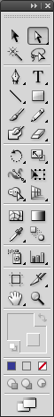
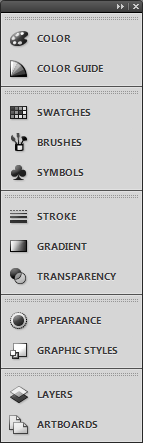

Getting to know Adobe Illustrator09/06/15

Adobe Creative Cloud is an awesome suite of applications for anyone looking to add additional polish to documentation. One of the most useful applications in the suite is Adobe Illustrator.
When might a technical writer use Adobe Illustrator?
Imagine your client has provided a logo to be reproduced at different sizes throughout a document, but they’ve only provided one image and when you try to resize the image it pixelates.
This happens because the client has provided a raster image. Raster files use a set number of pixels to display images. When a raster image is enlarged these pixels are simply spread across a larger area, which causes pixelation.
By importing the source image into Illustrator you can trace over the image to create a vector image. Vector images are mathematically defined graphics that can be scaled ad infinitum without the risk of pixelation.
This article will provide a brief overview of the main areas of the Adobe Illustrator interface.
Artboard
The artboard is where you will create your vector image. When you first open Illustrator your artboard will consist of one layer. As you work and your vector image becomes more complex you will begin to add additional layers to more easily manage the content. I will look at layers in my next article.
Menu bar
The Menu bar displays a range of menus for accessing additional options. There are nine menus:
File
You can use the File menu to create new files, save or export existing files, import files, and manage document settings.
Edit
You can use the Edit menu to define preferences, set keyboard shortcuts, adjust presets and cut, copy and paste content.
Object
You can use the Object menu to transform and arrange objects, modify existing objects and create new objects.
Type
You can use the Type menu to access font settings.
Select
You can use the Select menu to make specific selections such as selecting the next object above or below an object or even all the objects on the artboard.
Effect
You can use the Effect menu to apply Illustrator and Photoshop effects to an image such as rasterize, warp and blur.
View
You can use the View menu to determine how Illustrator is displayed. For example, you could display rulers and guides that indicate when objects are aligned.
Window
You can use the Window menu to determine which windows and panels are displayed. For example, you could open the Transparency panel and hide the Control panel.
Help
You can use the Help menu to access help information and software updates.
Control Panel
The Control Panel is a dynamic toolbar that displays settings for tools and objects. For example, when the type tool is selected the control panel displays additional type settings for font type, point size and paragraph alignment.
Tools Panel
The Tools Panel contains all the tools used to select, draw, type, paint, shape, and move vector images in Adobe Illustrator.
Note: For more information on the tools available in Adobe Illustrator, see Adobe’s Drawing tool gallery.
Panels Pane
The Panels Pane contains a selection of panels that grant access to specific options. For example, you can click the Gradient panel to applied a gradient to the vector image.